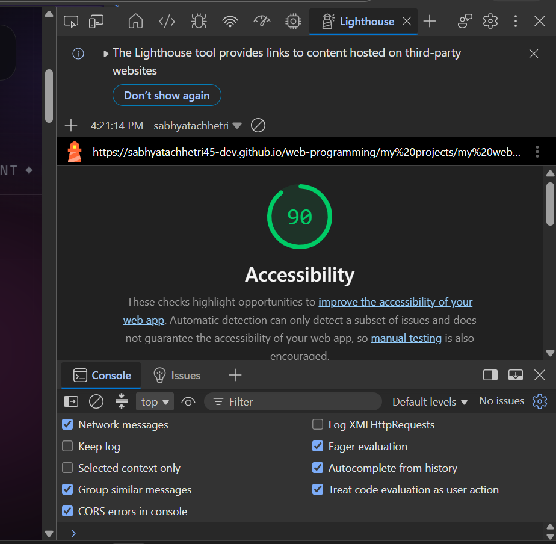
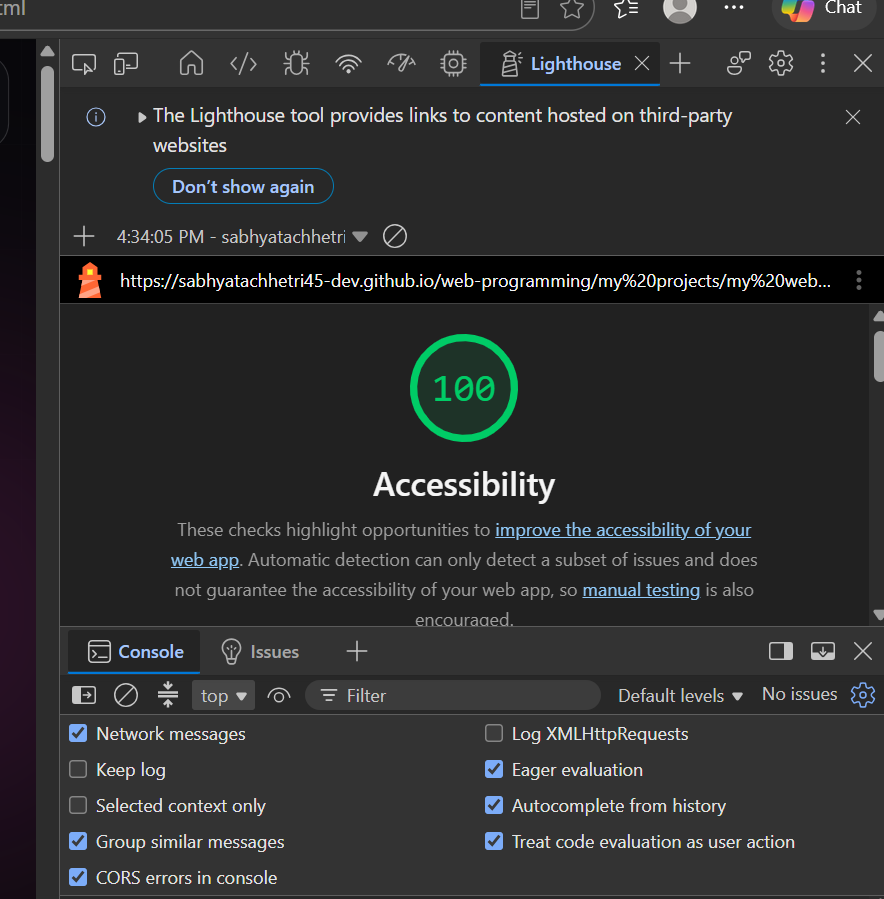

I used Google Lighthouse to evaluate the accessibility of my personal website. The initial accessibility score was 90 out of 100. After making accessibility improvements, I ran the audit again and achieved a score of 100 out of 100.
Initial Lighthouse accessibility score: 90/100.

Final Lighthouse accessibility score: 100/100.

I added a skip link that allows keyboard users to skip repeated navigation links and move directly to the main content. This makes the website easier to navigate.
HTML example: <a href="#main-content">Skip to main content</a>
I added an accessible label to the navigation element. The label helps screen reader users understand the purpose of the navigation menu.
HTML example: <nav aria-label="Main navigation">
I added a visible outline when a link receives keyboard focus. This helps keyboard users identify which link is currently selected.
CSS example: a:focus-visible { outline: 3px solid #67e8f9; }
These improvements make my website more accessible to keyboard users and people who use screen readers. The Lighthouse accessibility score increased from 90 to 100 out of 100 after the improvements.